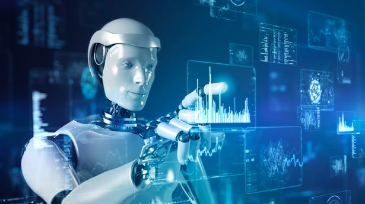

Artificial Intelligence
What is Artificial Intelligence? Artificial intelligence (AI) is a wide-ranging branch of computer science concerned with building smart machines capable of performing tasks that typically require human intelligence.
Usage of Artificial Intelligence
- Online shopping and advertising
- Machine translations
- Smart homes
- Cars
- Cybersecurity
- Health
- Transport
- Manufacturing
- Public administration and services
Advantages
- Reduction in Human Error: With artificial intelligence, choices are made by using a certain set of algorithms on the information that has already been obtained.
As a result, mistakes are decreased and there is an opportunity to achieve accuracy with a higher level of precision.
- Risk-taking instead of Humans: By creating an AI robot that can perform dangerous tasks on our behalf, we can get beyond many of the risky restrictions that come with being a human.
- Available 24x7: Unlike humans, robots don't become bored while they operate nonstop for 24 hours straight because of AI.
- Helping with Repetitive Jobs: By using artificial intelligence, we can efficiently automate these menial chores and even eliminate "boring" work for humans, freeing them up to become more creative.
- Faster Decisions: By combining AI with other technologies, we can make computers make judgments and act faster than a person.
Disadvantages
- High costs of creation: As AI changes daily, hardware and software must be upgraded over time to stay current with demands.
Machines require regular maintenance and repair, which is expensive.
- Making Humans Lazy: Because most work is now automated by AI apps; this has the effect of making people lazy.
- Unemployment: Human intervention is decreasing as robots take over the bulk of repetitive chores and other jobs, which will have a significant impact on employment standards.

Top 9 ethical issues in artificial intelligence